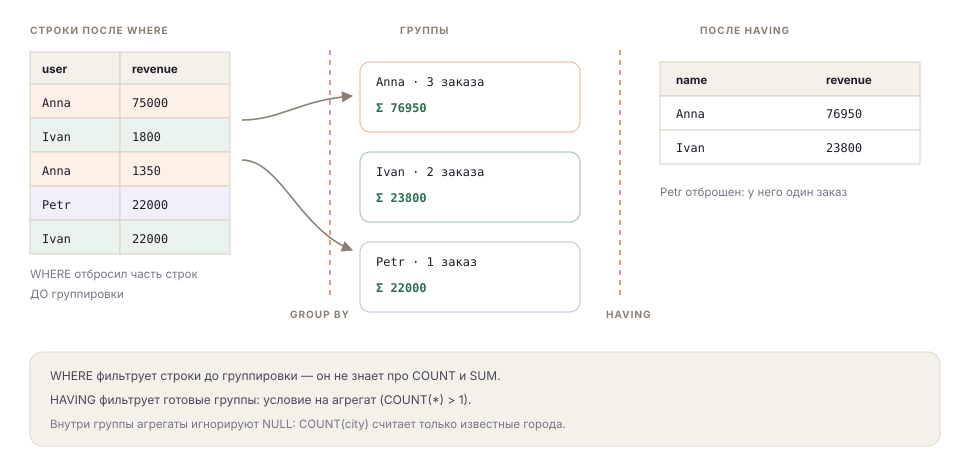

GROUP BY и HAVING: тот же словарь-аккумулятор Теперь не в Python, а внутри базы — но механика знакомая
В главе 02 мы раскладывали заказы по пользователям через defaultdict.
GROUP BY делает то же самое: раскладывает строки по ключу и считает
в каждой группе. Разница — в масштабе и в том, что агрегаты выполняются внутри базы.
Словарь главы — если забыли термины
- GROUP BY
- Разложить строки по ключу и посчитать агрегаты в каждой группе.
- агрегат
- COUNT, SUM, AVG, MIN/MAX — сворачивают группу в одно значение.
- HAVING
- Фильтр групп по агрегату; WHERE для строк выполняется раньше.
- ключ группировки
- Колонка(и), по значениям которых собираются группы.
- NULL-группа
- В PostgreSQL строки с NULL в ключе образуют отдельную группу.
01Зачем это backend-разработчику
- Почти все отчёты — это «сумма/среднее/количество по группам»: по пользователям, дням, категориям.
- WHERE и HAVING — главный источник путаницы: от условия зависит, какие строки и какие группы исчезнут.
- NULL в ключе — отдельная группа, которая легко теряется из отчёта.
- Собеседование: «чем WHERE отличается от HAVING», «можно ли группировать по двум колонкам», «что будет с NULL».
02Ассоциация-якорь: лотки и итоги
GROUP BY — это лотки с ярлыками. Строки раскладываются по лоткам («Anna», «Ivan», «Petr»), в каждом считается итог, а потом из лотков собирается новая таблица.
WHERE решает, какие строки вообще попадут в лотки. HAVING — какие лотки останутся в результате. Один фильтр до раскладки, второй — после подсчёта.
03Ассоциативный ряд: восемь звеньев
- GROUP BYразложить по ключу
- COUNTсколько строк в группе
- SUMсумма по группе
- AVGсреднее по группе
- WHEREфильтр строк до групп
- HAVINGфильтр групп по агрегату
- два ключагруппы по паре колонок
- NULLотдельная группа, если не забыть
04Схема: где WHERE, а где HAVING

05Как это устроено на самом деле
База группирует строки по значениям ключа и вычисляет агрегаты внутри каждой группы. В результат попадают группа и её агрегаты — по одной строке на группу.
| Агрегат | Что считает | NULL |
|---|---|---|
| COUNT(*) | строки группы | включает строки с NULL |
| COUNT(col) | непустые значения | игнорирует NULL |
| SUM(col) | сумму | игнорирует NULL |
| AVG(col) | среднее | игнорирует NULL — делит на число известных |
| MIN/MAX | минимум/максимум | игнорирует NULL |
Агрегаты и NULL
AVG делит сумму на число известных значений, а не на число строк.
Например, две строки, одна с NULL: сумма делится на 1, а не на 2.
Если нужен знаменатель «все строки», считайте отношение явно:
SUM(x) / COUNT(*).
NULL как ключ группировки
В PostgreSQL строки с NULL в ключе образуют отдельную группу. В pandas
по умолчанию наоборот — такие строки выбрасываются (глава 15). Это одна из причин, почему
отчёты в SQL и pandas могут расходиться.
06Лаборатория: запустить и увидеть
Фрагменты файла 21_group_by_having.sql.
База learning_shop. Выручка заказа — quantity * price,
поэтому везде соединение заказов с товарами.
Шаг 1. Выручка по пользователям
SELECT u.name, COUNT(*) AS orders, SUM(o.quantity * p.price) AS revenue FROM orders o JOIN users u ON u.id = o.user_id JOIN products p ON p.id = o.product_id GROUP BY u.name ORDER BY revenue DESC;
Внутреннее соединение отбросило заказ без пользователя — в отчёте его нет. Это стоит помнить, когда «сумма не сходится с общей выручкой».
Шаг 2. HAVING: только группы с несколькими заказами
SELECT u.name, COUNT(*) AS orders, SUM(o.quantity * p.price) AS revenue FROM orders o JOIN users u ON u.id = o.user_id JOIN products p ON p.id = o.product_id GROUP BY u.name HAVING COUNT(*) > 1 ORDER BY revenue DESC;
Шаг 3. WHERE и HAVING в одном запросе
SELECT p.category, COUNT(*) AS items, ROUND(SUM(o.quantity * p.price), 2) AS revenue FROM orders o JOIN products p ON p.id = o.product_id WHERE p.price > 400 GROUP BY p.category HAVING SUM(o.quantity * p.price) > 3000 ORDER BY revenue DESC;
WHERE выбросил дешёвые товары до группировки, HAVING — категорию, где выручка слишком мала. Books не попала: 2700 меньше 3000.
Шаг 4. Группировка по двум колонкам
SELECT p.category,
DATE_TRUNC('month', o.created_at)::date AS month,
SUM(o.quantity * p.price) AS revenue
FROM orders o
JOIN products p ON p.id = o.product_id
GROUP BY p.category, DATE_TRUNC('month', o.created_at)
ORDER BY month, category;
Шаг 5. NULL как группа и COUNT
SELECT o.user_id, COUNT(*) AS cnt FROM orders o GROUP BY o.user_id ORDER BY o.user_id NULLS LAST; SELECT COUNT(*) AS rows, COUNT(user_id) AS known_user FROM orders;
Заказ без пользователя образовал группу с NULL. COUNT(*) её посчитал,
COUNT(user_id) — нет.
Шаг 6. Агрегаты игнорируют NULL
SELECT COUNT(*) AS rows, COUNT(city) AS cities,
COUNT(DISTINCT city) AS unique_cities
FROM users;
Пять строк, четыре известных города, три уникальных. NULL не считается ни в одном агрегате.
07Мост: SQL и pandas рядом
# GROUP BY user + SUM
orders.groupby("user_id")["revenue"].sum()
# HAVING COUNT(*) > 1
orders.groupby("user_id").filter(lambda g: len(g) > 1)
# GROUP BY two columns
orders.groupby(["category", "month"])["revenue"].sum()
# SQL: NULL — отдельная группа; в pandas по умолчанию dropna=True
orders.groupby("user_id", dropna=False)["revenue"].sum()
Одно и то же действие, но в pandas есть dropna, а в SQL NULL по умолчанию —
полноценная группа. Проверяйте это, когда сравниваете отчёты.
08Шесть ошибок, на которых спотыкаются
WHERE COUNT(*) > 1 — ошибка: WHERE выполняется до группировки.
SELECT name, category ... GROUP BY category — PostgreSQL требует либо агрегировать name, либо добавить в GROUP BY.
Числа расходятся при NULL — например, «заказы» против «заказы с известным пользователем».
Кто-то фильтрует WHERE user_id IS NOT NULL, и отчёт теряет гостевые заказы.
JOIN с users отбрасывает заказы без пользователя, и итог меньше ожидаемого.
Сортировка по негруппированной колонке неоднозначна.
09Вопросы с собеседования
Чем WHERE отличается от HAVING?
WHERE фильтрует строки до группировки, HAVING — группы после. Условия на агрегаты (COUNT, SUM) возможны только в HAVING.
Что происходит с NULL в ключе GROUP BY?
В PostgreSQL строки с NULL образуют отдельную группу. В pandas по умолчанию они выбрасываются.
Чем COUNT(*) отличается от COUNT(col)?
COUNT(*) считает строки, COUNT(col) — непустые значения. Разница — число NULL в колонке.
Можно ли группировать по двум колонкам?
Да: GROUP BY a, b даёт группу на каждую уникальную пару.
Почему колонка должна быть в GROUP BY?
Потому что для группы из нескольких строк одно значение негруппированной колонки не определено. База требует явности.
Как посчитать среднее, не теряя информацию о пропусках?
Показать рядом COUNT(*) AS rows и COUNT(col) AS known, либо использовать COALESCE осознанно.
Как найти группы с условием?
GROUP BY ... HAVING условие_на_агрегат. В pandas — groupby(...).filter(...).
Почему сумма в отчёте меньше общей выручки?
Чаще всего из-за INNER JOIN, который отбросил строки без совпадения (например, заказ без пользователя).
10Три задачи: сначала своя попытка
01 Выручка по категориям
Посчитайте выручку и число заказов по каждой категории товаров.
Показать решение
SELECT p.category, COUNT(*) AS orders,
SUM(o.quantity * p.price) AS revenue
FROM orders o JOIN products p ON p.id = o.product_id
GROUP BY p.category
ORDER BY revenue DESC;
02 Пользователи с чеком выше порога
Оставьте пользователей, у которых больше одного заказа и выручка выше 50000.
Показать решение
SELECT u.name, COUNT(*) AS orders, SUM(o.quantity * p.price) AS revenue FROM orders o JOIN users u ON u.id = o.user_id JOIN products p ON p.id = o.product_id GROUP BY u.name HAVING COUNT(*) > 1 AND SUM(o.quantity * p.price) > 50000 ORDER BY revenue DESC;
03 Гостевые заказы
Покажите выручку по группам, включая заказы без пользователя, и объясните разницу с INNER JOIN.
Показать решение
SELECT COALESCE(u.name, 'гость') AS who,
SUM(o.quantity * p.price) AS revenue
FROM orders o
LEFT JOIN users u ON u.id = o.user_id
JOIN products p ON p.id = o.product_id
GROUP BY COALESCE(u.name, 'гость')
ORDER BY revenue DESC;
Что важно. LEFT JOIN сохранил гостевой заказ, COALESCE дал ему имя, а сумма всех строк теперь совпадает с общей выручкой.